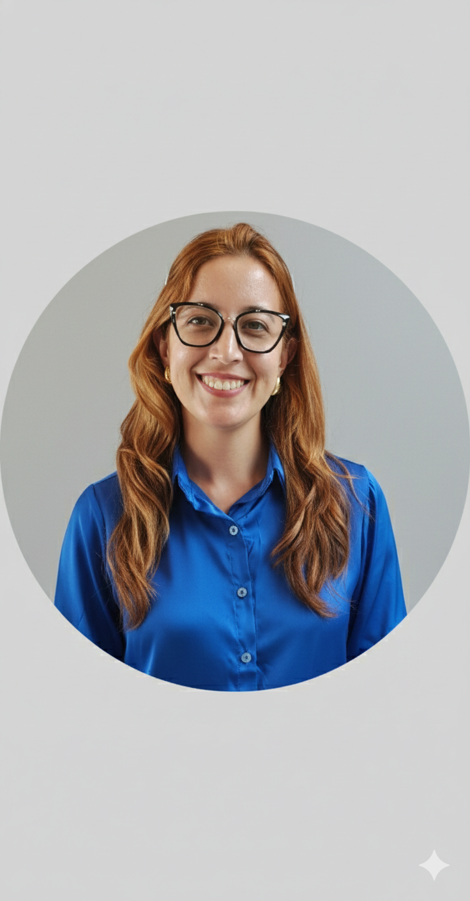
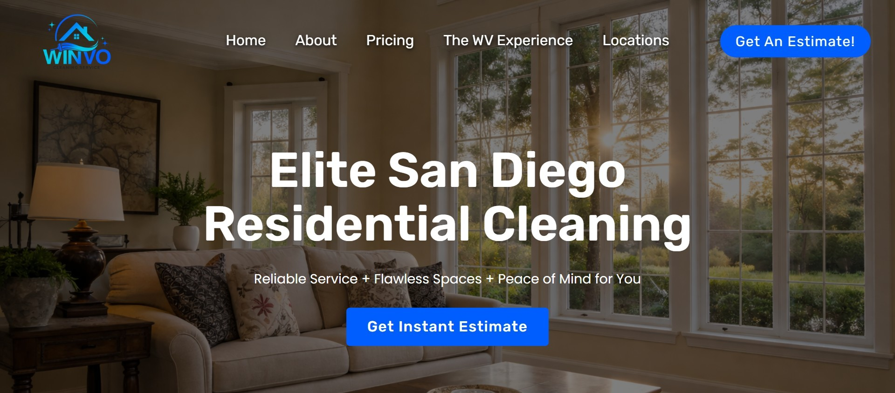
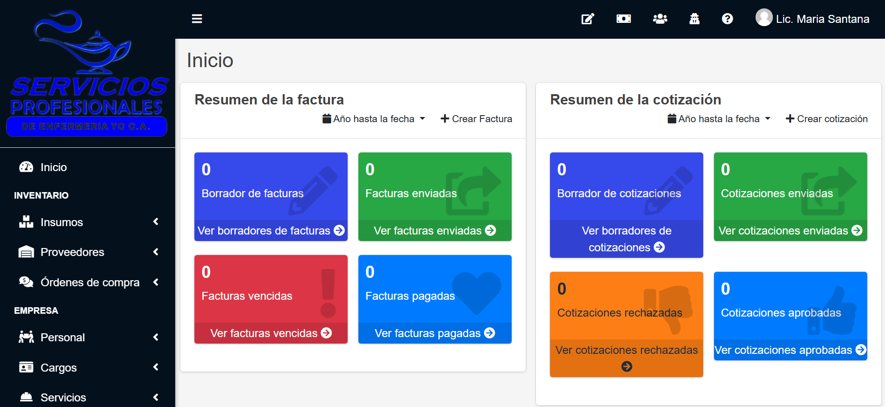
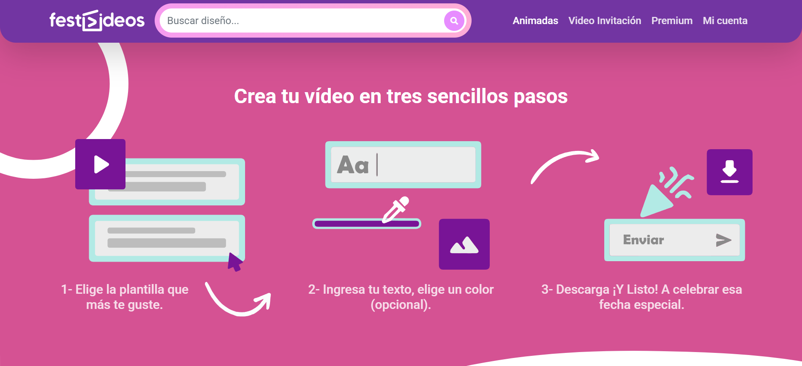

Especialista en
Diseño sitios web rápidos y seguros. Planificados estratégicamente para resolver necesidades de negocio. Combino lógica de ingeniería con optimización SEO; así garantizo que la infraestructura técnica de tu negocio no solo destaque en Google, sino que esté diseñada para vender.
Una muestra de soluciones reales diseñadas para cumplir objetivos de negocio, optimizar procesos y mejorar la presencia digital de mis clientes.

EN DESPLIEGUEPágina web para el mercado de San Diego, California, EE. UU. Diseñada con un enfoque comercial y SEO local, optimizada para captar clientes potenciales.

PRIVADOAplicación web interna que automatiza la asignación de personal e insumos a proyectos. Además, integra módulos de gestión para el control de cotizaciones, órdenes de compra y facturas.

EN LÍNEAPlataforma web rápida e intuitiva para personalizar plantillas multimedia con imágenes, textos dinámicos y colores a elección. Genera la renderización del video directamente en el navegador para su descarga inmediata.
Me enfoco en crear soluciones web que resuelven problemas reales de negocio. No me limito a armar páginas visuales; me dedico a programar la estructura interna del sitio para que funcione sin fallas, sea veloz y soporte el crecimiento de tu marca. Al escribir código propio y adaptado a tus necesidades, evito los errores comunes de los sitios web lentos o inseguros. Combino este desarrollo técnico con una navegación sencilla para el usuario y optimización para Google. El resultado es una herramienta digital estable, profesional y hecha exclusivamente para cumplir tus objetivos comerciales.